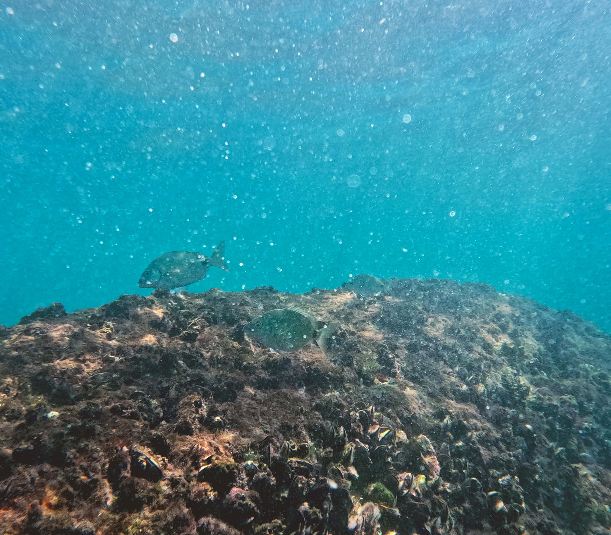
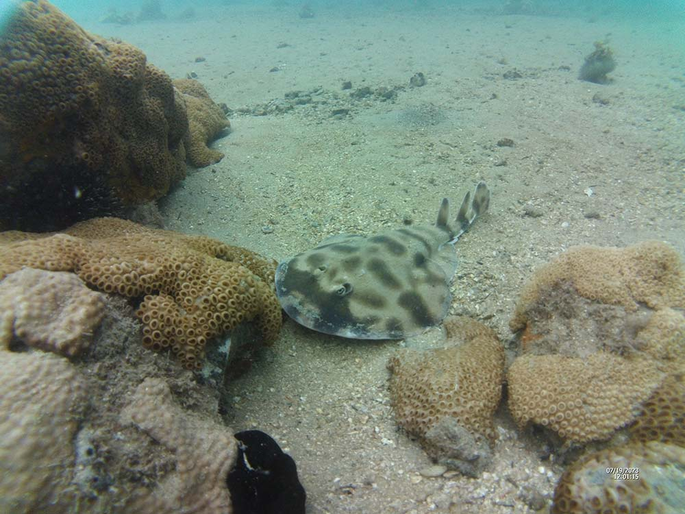
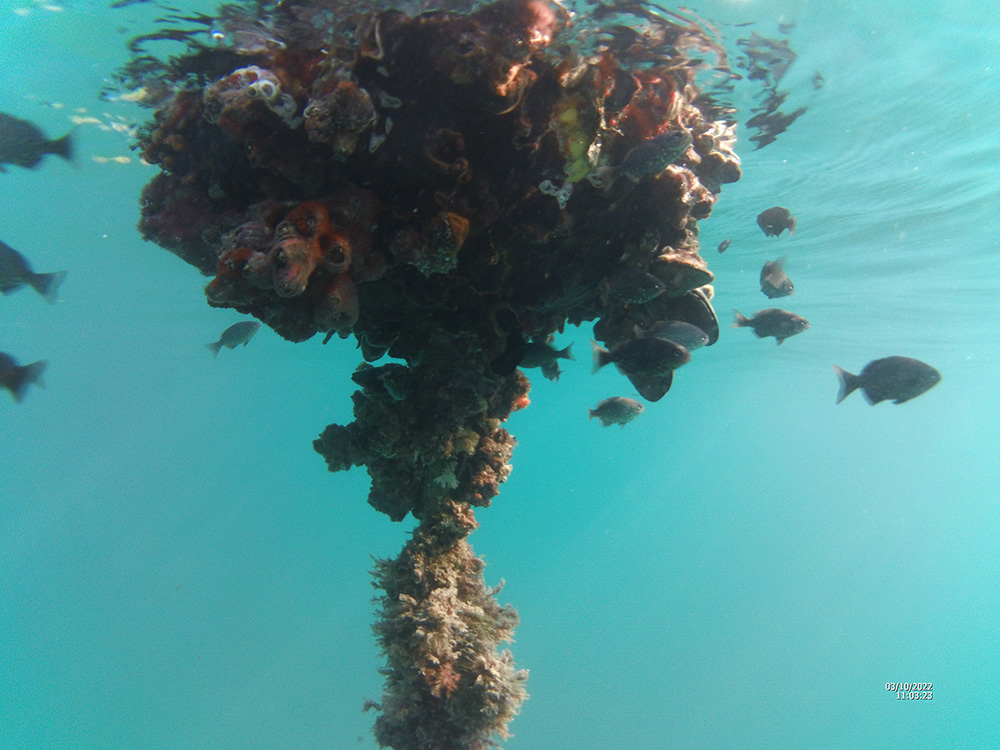

Oceano Brasileiro
Nesse site você pode encontrar algumas de minhas
fotos subaquáticas tiradas em diversos pontos de mergulho
na costa do estado do Rio de Janeiro.

Rio de Janeiro

Arraial do cabo

Ilha Grande